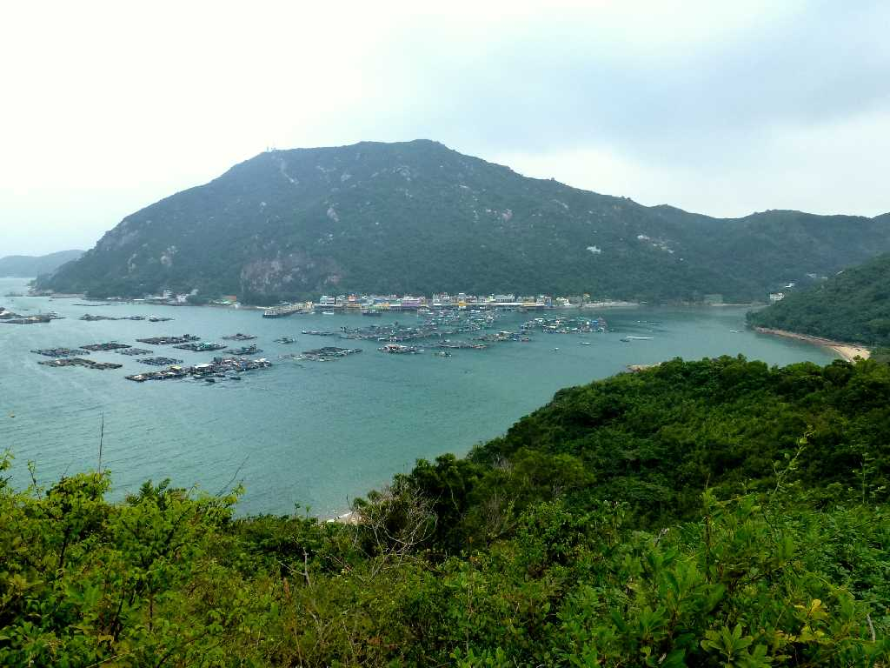
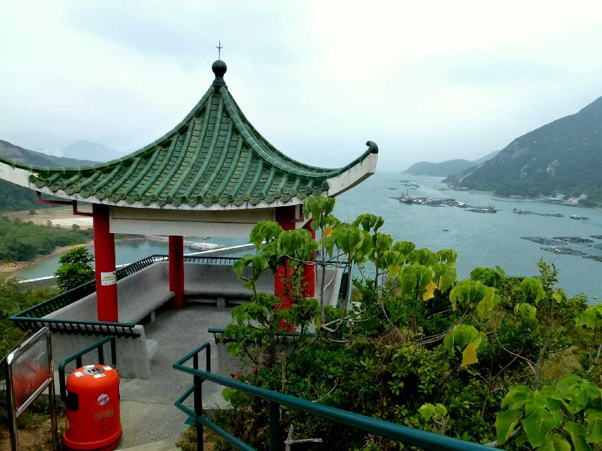
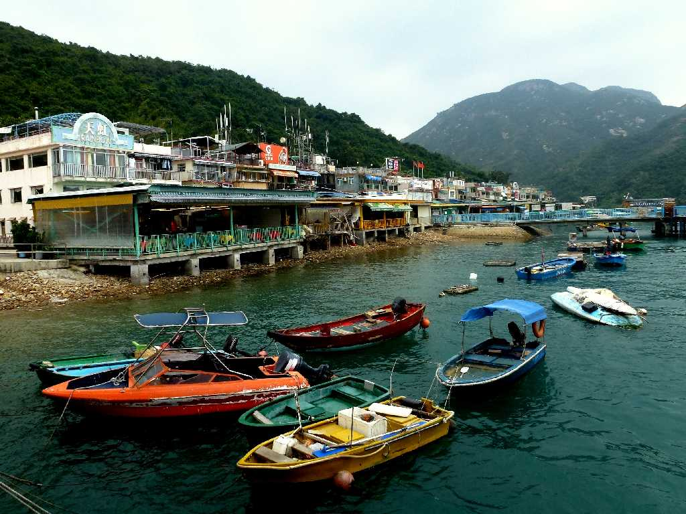
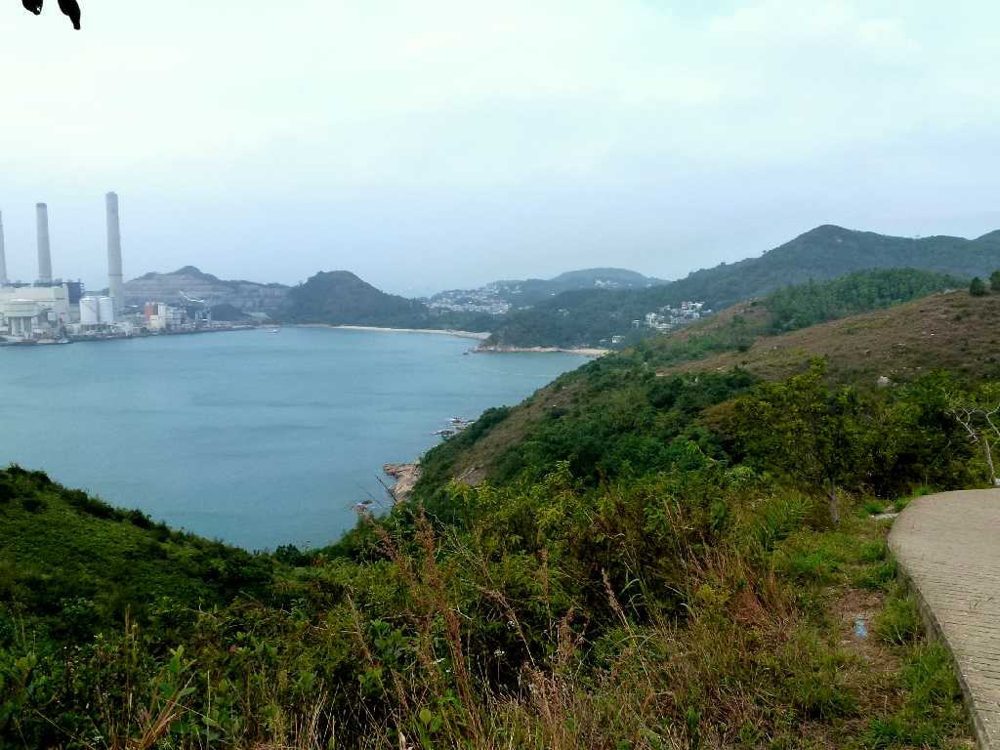
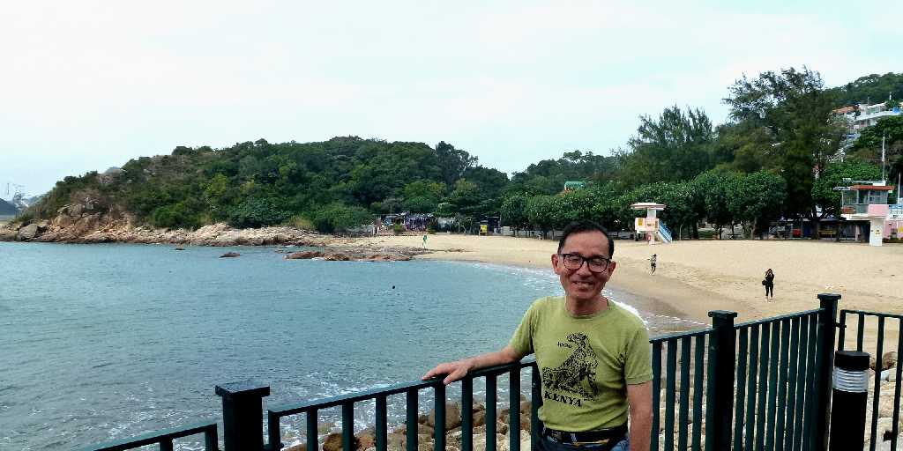
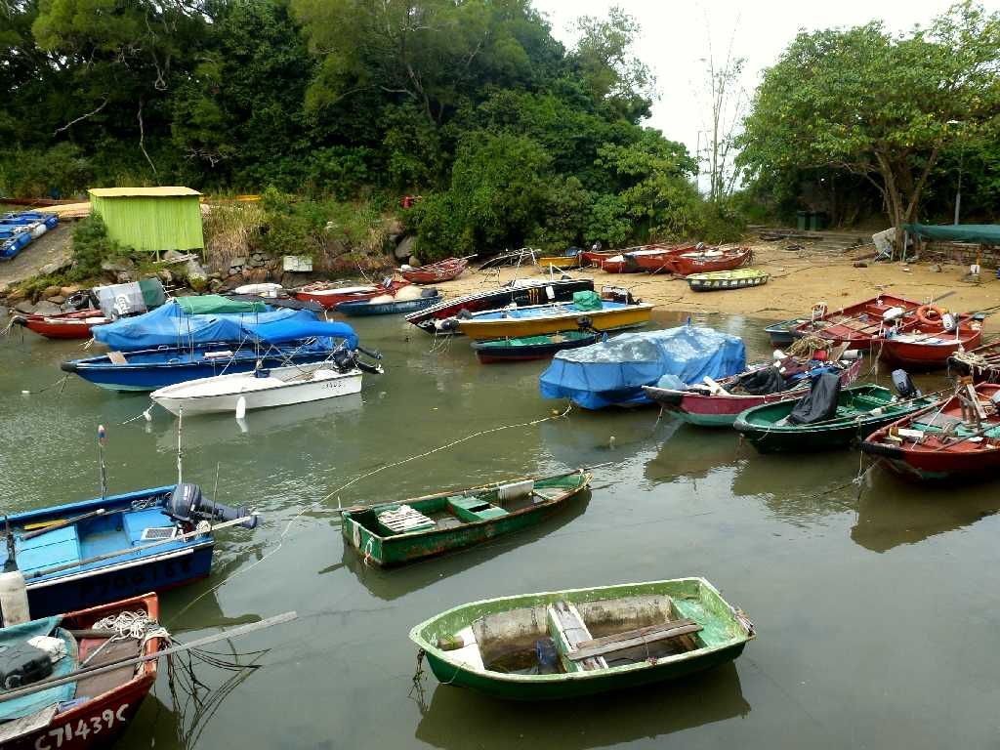

Sok Kwu Wan from Pavilion Lamma Island Hong Kong 香港 南Y島 索罟湾
見晴台から南Y島の中心地索罟湾を望む

Pavilion Lamma Island
溶樹湾と索罟湾を結ぶ散策路にある見晴台

Sok Kwu Wan
索罟湾の漁港には観光客向けの海鮮料理店が立ち並ぶ

Lamma Island

November 15 2012 Hung Shing Yeh Beach Lamma Island

Yung Shue Wan Lamma Island 溶樹湾
南Y島西北部に位置する溶樹湾の漁村の船溜